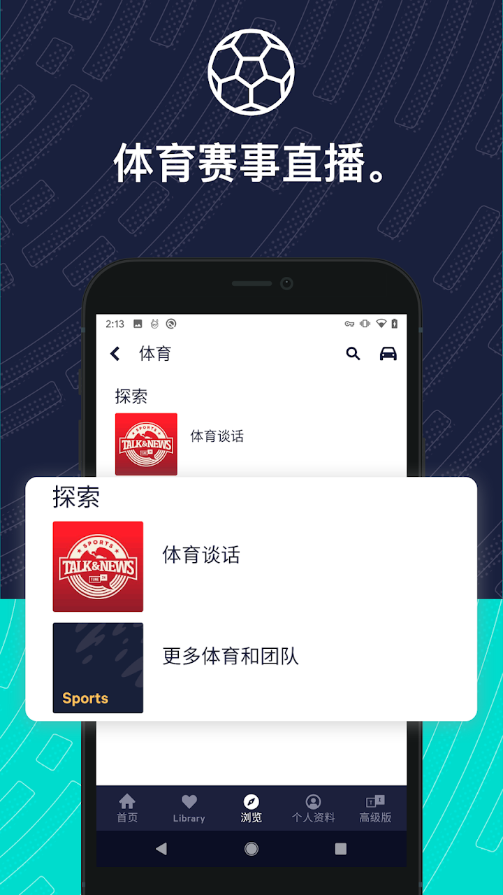

三千公里自驾路上，我靠 TuneIn 解决了一个老问题
一次跨省自驾的电台焦虑让我认识了 TuneIn——从手机到 CarPlay 再到客厅音箱，一个账号把两百多种设备的收听体验串了起来。
出发前三十分钟，我还在跟蓝牙较劲
国庆前那个周五下午，收拾完行李，我瘫在驾驶座上摆弄车载蓝牙。老婆坐副驾刷手机，后排两只猫各自占了一个座位。我本来觉得导航 + 手机蓝牙播音乐就够了，直到老婆说了一句：「能不能听听电台？路上想听点直播感的东西。」
我先是用 CarPlay 打开系统自带的电台应用——界面干净得像刚装完，中文电台只有两三个，而且信号时断时续。然后切回几个国内的音频 App，要么在车机上根本没适配，要么 App 一打开就卡在登录页。折腾了十几分钟，导航还没设好，人先烦躁起来了。
「换个思路」，我把手机递给老婆，「搜搜有没有专门做国际电台聚合的。」她翻了两分钟递回来：去TuneIn官网看看。
安装包从官方下载拿，一分钟装完，我在手机上快速登了个账号。界面第一眼很清爽，不像国内同类那样塞满广告推送。我翻到搜索框，输入了几个常听的中文电台名——北京交通广播、央广经济之声，全部秒出结果。再切到 CarPlay，应用自动识别并切换成了大按钮的车机界面。
我靠在座椅上愣了三秒。就这么简单？

从北京到西安，一千二百公里的背景音
上路之后才发现，TuneIn 在高速上表现比预想的好。电台直播流在网络通畅时几乎零延迟，偶尔进入隧道信号断两三秒，出隧道自动恢复。更重要的是——我可以在手机上先把想加的电台点进收藏，上车后 CarPlay 直接读取同账号的数据，不需要在车机上再搜一遍。
沿途经过太原时，我临时想听听当地路况，在搜索框输入「太原交通广播」，结果列表里立刻跳出四五个频道。点进去，熟悉的方言和路况播报瞬间填满了车厢。这是过去用原生电台做不到的——只能收到本地 FM 信号覆盖的十几个台，离开城市就废了。
过了郑州，老婆换上来开。我在后座眯了一会儿，醒来时车里飘着轻音乐——不是我收藏的那个频道。抬头看了一眼车机屏幕，才发现老婆用她自己的 TuneIn 账号在听。两个人分别登账号，各自的收藏互不干扰，同时 CarPlay 又都在同一套界面里，这个细节我之前没太注意，用起来却格外顺手。
中途在服务区的一个发现
在华山脚下一个服务区歇脚，我掏出 iPad 想翻点东西。习惯性地打开了 TuneIn（反正账号登过），界面自动变成了平板适配版——左侧是分类栏，右侧是内容预览，布局比手机宽松得多。我顺手搜了一下 NASCAR，正好赶上排位赛直播。坐在服务区的石凳上啃泡面，耳朵里是赛车引擎声和解说，有种奇怪的穿越感。
「你还听赛车？」老婆凑过来。
「就看看。」我把频道切到谈话台，开始听车手访谈。这时候我才意识到，TuneIn 不只是电台——它还有 570 万个播客节目，按艺术文化、商业经济、喜剧、新闻政治这些话题分好了类。我翻了翻商业类，有好几个关注很久的节目居然都在里面。原来这才是它的内容版图。
后来去TuneIn文档翻了一下才弄明白，播客和电台在产品里是两套逻辑：电台是「此刻正在播」的直播流，播客是「单集可回放、可订阅」的录播内容。要当下的陪伴感用电台，要系统的内容消费用播客——一句话就把它们的分工说清楚了。
回家之后，故事还没完
三天后回到北京，我把 TuneIn 的账号留在了车机里。老婆收拾东西时在客厅喊了一声：「你用 TuneIn 的吗？Sonos 里好像有。」
我跑过去一看，果然。Sonos App 的服务列表里直接嵌了 TuneIn，我登了同一个账号，手机上收藏的电台瞬间出现在了客厅的音箱上。我试着喊了一声 Amazon Alexa：「打开 TuneIn，播放北京交通广播。」音箱应声启动，熟悉的交通路况播报填满了整个客厅。
这一刻我才真正理解了官方说的「200 多种设备」是什么概念。它不是一个 App 商店里的数字噱头——是手机、车机、平板、智能音箱、电视、游戏主机……每一个设备上都有一个 TuneIn，而我只需要一个账号。
关于 Premium，我纠结了两天
TuneIn 有免费版和 Premium 订阅两档。免费版含广告，没有 Premium 专属内容；Premium 约 9.99 美元一个月，年付更划算，新用户有 7 天免费试用。
我试用了三天，听了几个赛季的 NASCAR 直播和 NHL 赛事，还翻了翻有声书板块——10 万多本书，Premium 会员可以无限听。说实话，内容量确实诱人，但我的使用场景其实很明确：开车听电台、在家偶尔听播客。免费版对我来说已经覆盖了大部分需求，广播里插的那几句广告并不会特别影响体验。
最后我没续费。但如果以后想系统追某个体育赛季，或者家里想换一台支持 TuneIn 的智能音箱当有声书播放器，Premium 可能会重新考虑。它的订阅是按月自动续费的，要停的话得在当前订阅期结束前至少 24 小时关闭，这点在文档里写得很清楚，不用怕被悄悄扣款。
一段尾声
三千公里的自驾结束了，但我对 TuneIn 的使用还在继续。每天早上通勤路上，CarPlay 里自动连上我收藏的新闻广播；晚上在家，老婆用 Sonos 听她的音乐频道，我在 iPad 上补白天没听完的播客。一个账号，一套收藏，所有设备无缝衔接。
这不是一个关于「又发现了一个好用 App」的故事。是关于一个账号如何把生活里碎片化的收听场景——开车、走路、居家、出差——用同一条线串起来的。在做这件事的软件里，TuneIn 是我见过的把这条线织得最密的那一个。
这套资料我同步存了三份：GitHub上的主仓库、Gitee镜像方便国内访问、GitCode上也备了一份以防某个渠道抽风。对这类跨平台内容型 App 感兴趣的朋友，三个仓库里都能翻到完整的安装指南、设备适配说明和订阅规则。